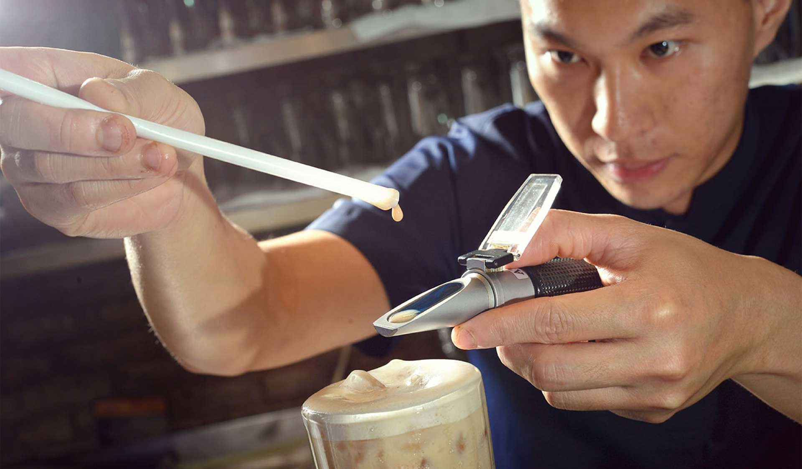
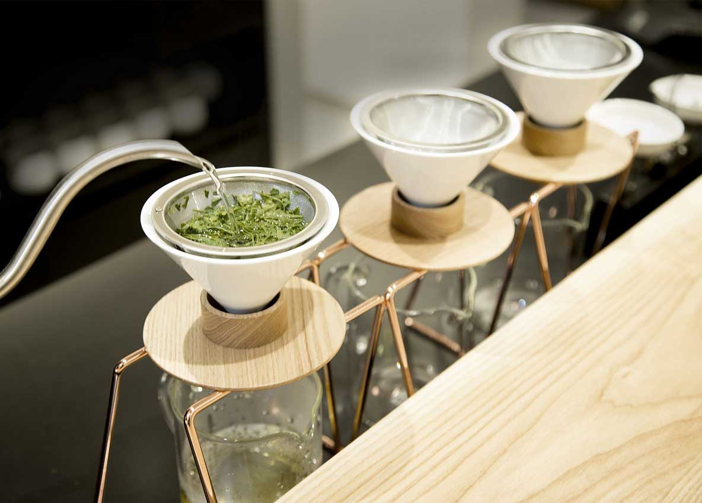

About us
About Bubble Tea House
In 2013, founders Han Yi Ahn and Jung Joon hyung noticed an increasing trend of bubble tea. Also around that time, online shopping and delivery of food items became a craze. While wanting to tap into the bubble tea market, they noticed a declining trend in the traditional tea growing and trading business as the youth sought after brighter and sweeter alternatives. Han Yi Ahn and Jung Joon Hyung opened The Bubble Tea Shop in response to these growing trends, while showcasing and maintaining the traditional roots of bubble tea.
Purpose and Goals
The founders managed The Bubble tea House with professional, quality oriented and innovative ideals based on the concepts of “Consistency and Continuity.” With the foundation of “founding traditions, bold innovations, and international perspective,” we build our corporate spirit of “embrace tradition, unleash innovation, seize the world.”
Future and Innovation
For the future, The Bubble tea House will continue to dedicate itself to innovation and improvements of operations in order to build an even better experience for our customers. We will continue to develop new product lines, modernize the customer experience, and broaden the accessibility of our brand.